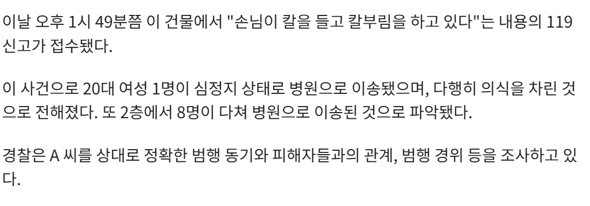

다행이다 ㅅㅂ

다행이다 ㅅㅂ
와 다행이네
다행이다... 범인새끼땜에 가엔 빠졌네
그 귀한걸 시발
진짜 불행 중 천만 다행이시다 ㅠㅠㅠㅠㅠㅠㅠ
살았어???다행이네 ㅅㅂ ㅠㅠ
살아서 다행이다
스트레스장애 없이 잘 극복할수 있었으면 좋겠네
아 다행이다...
와 어떻게 살린거지? 진짜 다행이다. 사형시켜라
존나 다행인데 부활이라하니까 ㅅㅂ ㅋㅋㅋ
그리워하면~ 언젠가~ 만나게되는~
다행이다
휴유증 없이 완치하셨으면
아우 다행이다
개ㅁㅊ놈 하나 땜에 몇명이
개 좆같은 놈한테 목숨잃은 사람이 아무도 없어서 다행입니다
제발 살아나라
심정지상태에서 병원도착이였으면 후유증 너무심할것같은데;;;

저정도면 먼저 조상님이 돌려보냈나본데